Torrent downloader UI
Интерфейс пользователя
Информация
Нашей командой был разработан дизайн интерфейса Windows приложения менеджера загрузок.
GUI построен с учетом возможности его реализации на платформе WPF.
Для WPF и XAML нужен векторный дизайн, это позволяет более точно (Pixel Perfect) реализовать всё в коде программы, а также иметь большую гибкость в изменении размеров элементов и их стилизации.
Ниже представлена увеличенная картинка основного окна приложения "в векторе" для оценки качества.
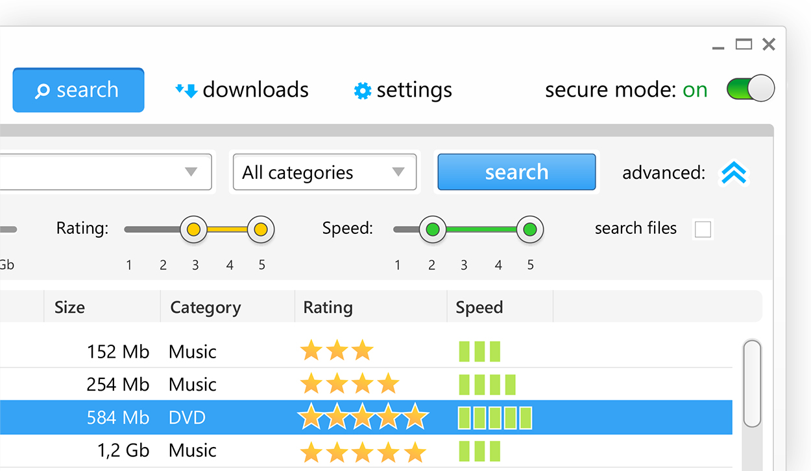Экраны приложения
- 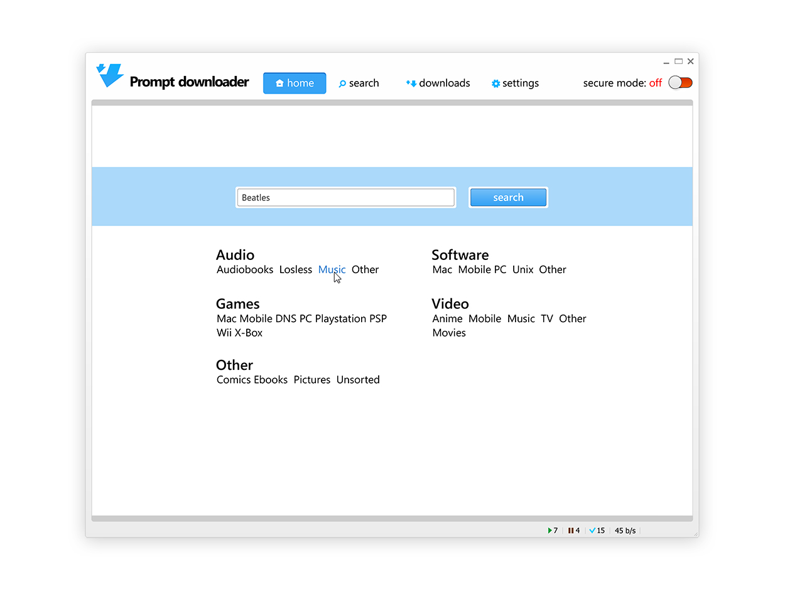
- 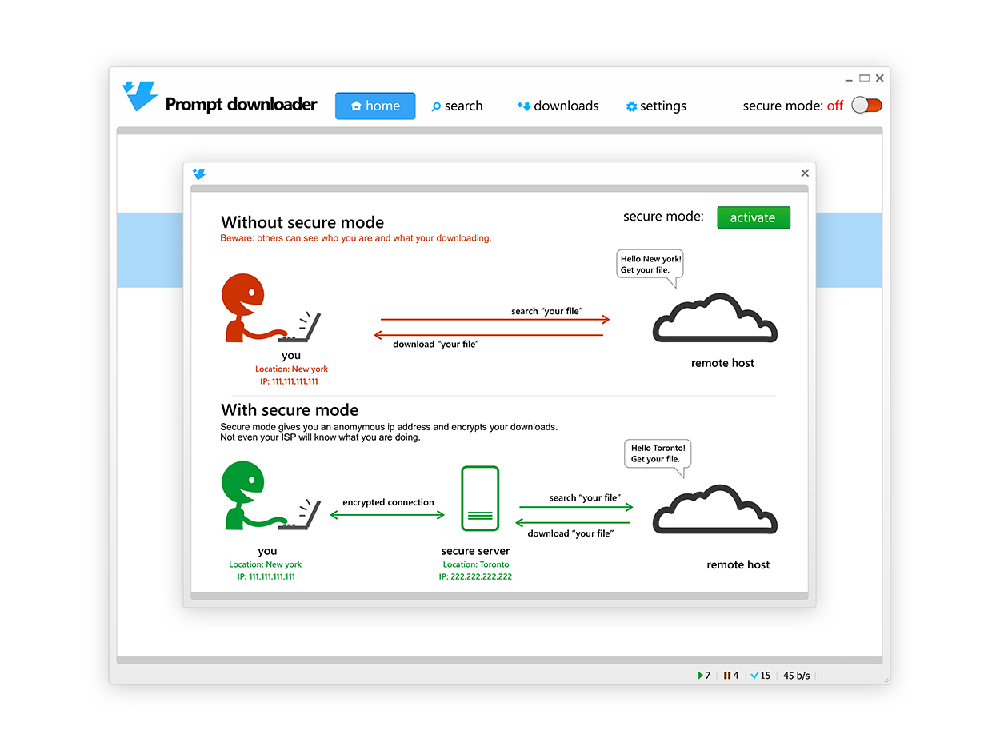
- 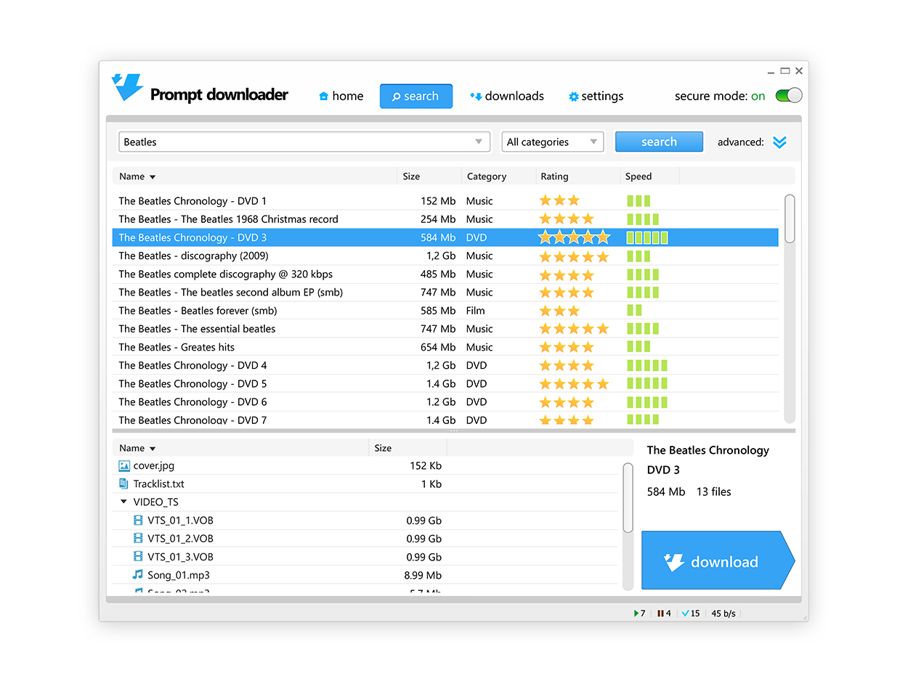
- 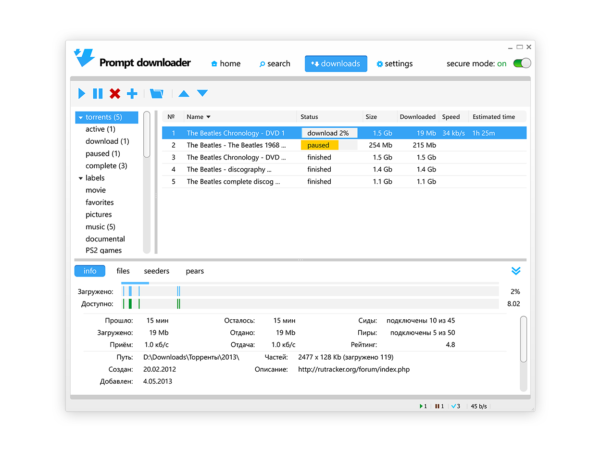
- 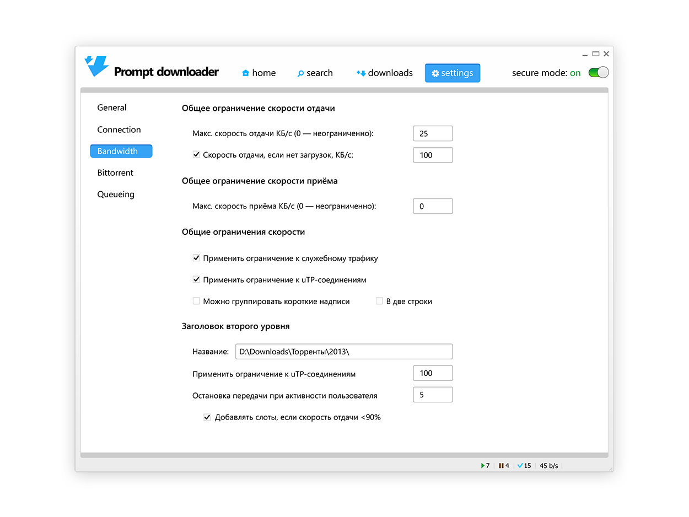
- 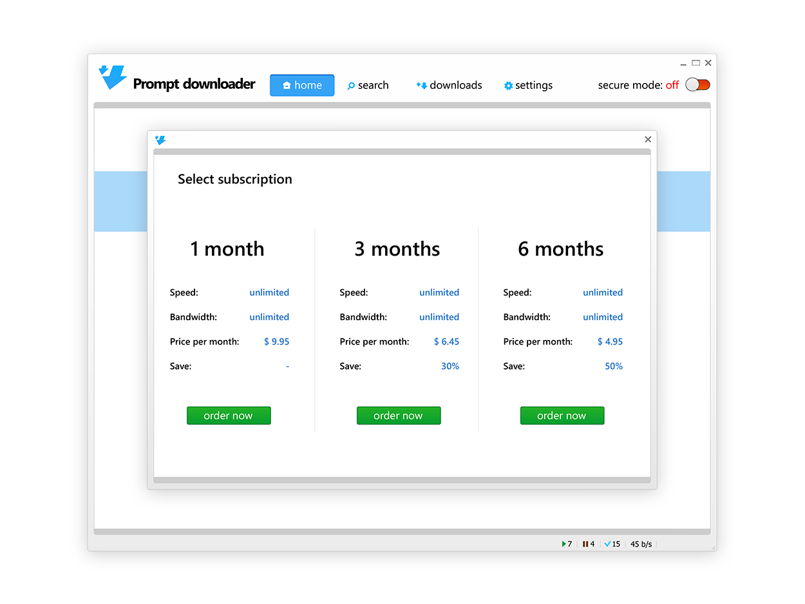
Один из вариантов интерфейса
На ранних стадиях работы результат не всегда однозначен, особенно в мелочах. Например, так выглядел один из первоначальных вариантов UI проекта:
менее контрастная, легкая цветовая гамма, немного другой дизайн кнопок (особенно заметно на ползунках настроек).
Изменения в мелочах постоянны, это естественный процесс. Всегда необходимо уметь искать компромиссы, отказываясь от некотрых решений.
Адаптивный дизайн
Даже в простых приложениях нужно учитывать, что программа может изменять свои размеры, проектируя изменения элементов, их положений и минимальные размеры окна.
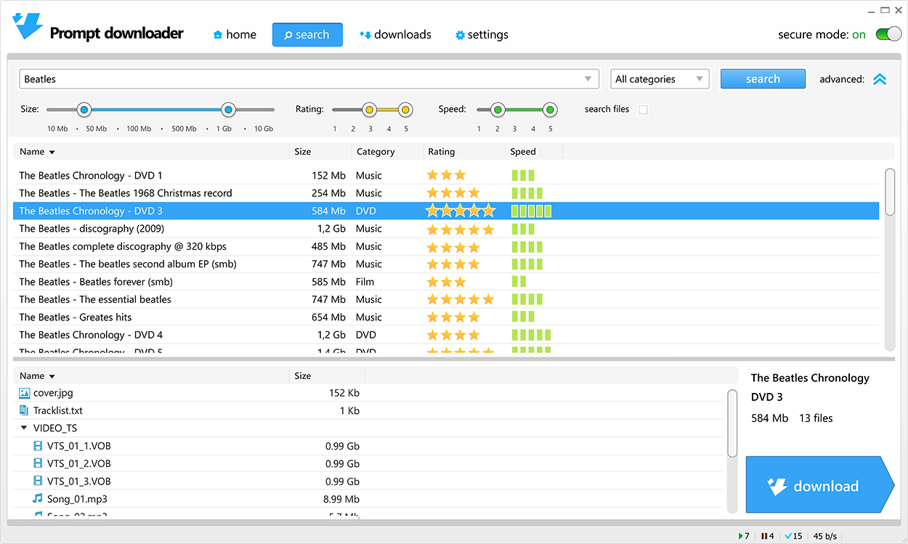UI kit Guidelines
Составление UI документации (гайдлайнов или стайл-гайдов) — последний этап перед внедрением интерфейса в реальное приложение. На этапе программирования ничего не получится без предварительного создания дизайнерами интерактивных состояний элементов, общей сетки и единых правил отступов в компоновке.
У нашей команды большой опыт интеграции дизайна и верстки интерфейсов в рабочие продукты собственными силами, поэтому мы точно знаем, что нужно в таких документах UI-разработчикам для их работы, учитывая ограничения платформ и множество различных факторов, с которыми мы сталкивались, программируя GUI.
Ниже показана часть таких "гайдлайнов" для данного проекта.
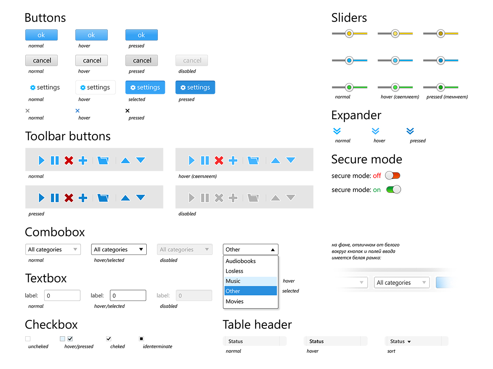 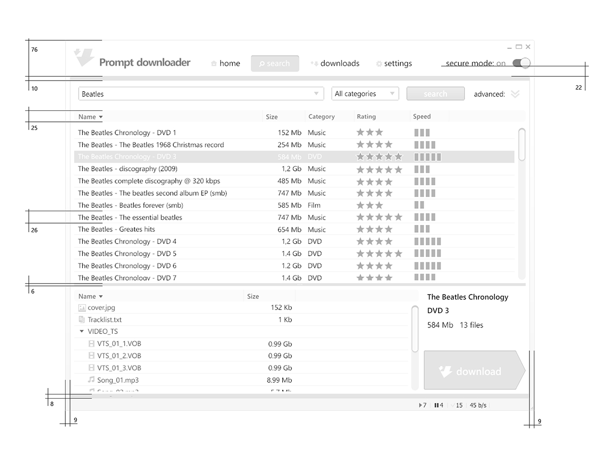 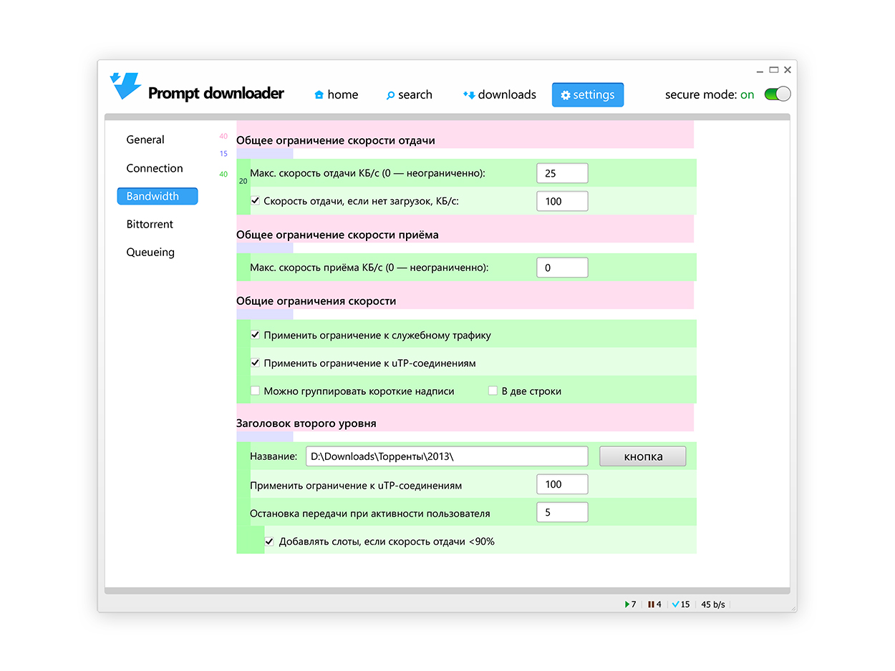 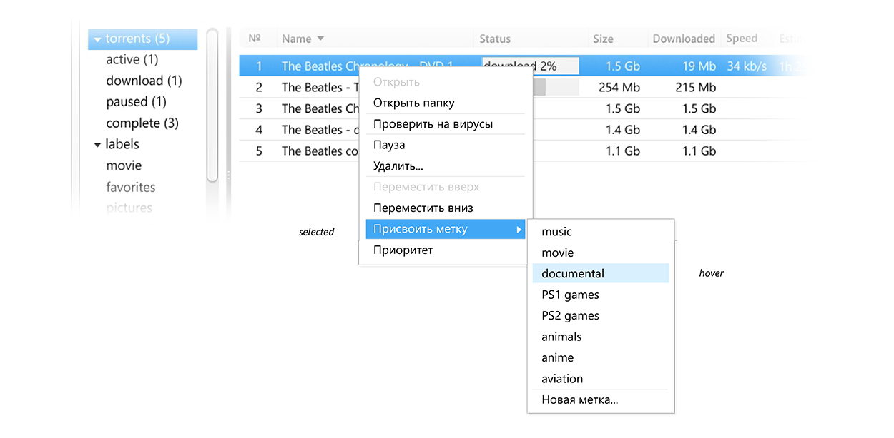
Спасибо за просмотр, ниже наши контакты и ссылки на социальные сети, подписывайтесь и не стесняйтесь задавать вопросы.